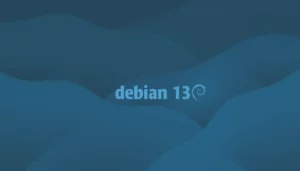
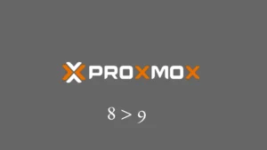

Как установить и использовать Docker на Ubuntu 24.04 — Полное руководство
Как установить и использовать Docker на Ubuntu 24.04 — Полное руководство
Если ты когда-нибудь сталкивался с задачей быстро развернуть сервис, протестировать новую технологию или просто устал от «адских» зависимостей на сервере — Docker станет твоим лучшим другом. Эта статья — не просто очередная инструкция «как поставить Docker на Ubuntu», а подробный гайд, который поможет тебе не только установить, но и понять, как всё это работает, где может пригодиться, и какие подводные камни могут встретиться на пути. Всё с примерами, схемами и лайфхаками, которые реально экономят время и нервы. Поехали!
Зачем вообще нужен Docker и почему это важно?
Docker — это не просто модное слово из мира DevOps. Это инструмент, который позволяет запускать приложения в изолированных контейнерах, не боясь, что обновление Python или Node.js на сервере сломает половину проектов. С Docker ты можешь:
Всё это особенно актуально, если ты арендовал VPS или выделенный сервер и хочешь выжать из него максимум.
Как это работает? Простыми словами о Docker
Docker использует контейнеры — это такие легковесные, изолированные среды, в которых крутится твое приложение со всеми нужными библиотеками и зависимостями. В отличие от виртуальных машин, контейнеры не тянут за собой целую ОС, а используют ядро хоста. Это делает их быстрыми, экономичными и удобными для автоматизации.
Вся магия строится вокруг образов (images) — шаблонов, из которых запускаются контейнеры. Ты можешь взять готовый образ из Docker Hub, или собрать свой через Dockerfile.
Примерная схема работы:
Как быстро и просто всё настроить? Пошаговая инструкция для Ubuntu 24.04
Ubuntu 24.04 — свежая, стабильная и очень популярная ОС для серверов. Установка Docker здесь максимально проста, но есть нюансы, которые сэкономят тебе время и избавят от типичных граблей.
1. Обновляем систему
sudo apt update && sudo apt upgrade -y
2. Устанавливаем необходимые пакеты
sudo apt install -y ca-certificates curl gnupg lsb-release
3. Добавляем официальный репозиторий Docker
sudo mkdir -p /etc/apt/keyrings
curl -fsSL https://download.docker.com/linux/ubuntu/gpg | sudo gpg --dearmor -o /etc/apt/keyrings/docker.gpg
echo \
"deb [arch=$(dpkg --print-architecture) signed-by=/etc/apt/keyrings/docker.gpg] https://download.docker.com/linux/ubuntu \
$(lsb_release -cs) stable" | sudo tee /etc/apt/sources.list.d/docker.list > /dev/null
4. Устанавливаем Docker Engine и Docker Compose
sudo apt update
sudo apt install -y docker-ce docker-ce-cli containerd.io docker-buildx-plugin docker-compose-plugin
5. Проверяем установку
sudo docker run hello-world
Если увидел приветствие от Docker — всё работает!
6. (Опционально) Добавляем своего пользователя в группу docker
sudo usermod -aG docker $USER
После этого нужно перелогиниться или выполнить newgrp docker, чтобы запускать Docker без sudo.
Практические примеры и схемы
Вот несколько типовых сценариев, которые реально встречаются на практике:
|
Кейс |
Плюсы |
Минусы |
Рекомендации |
|
Тестирование нового ПО без риска для системы |
|
|
Используй docker run --rm для временных контейнеров |
|
Развёртывание веб-сервера (Nginx, Apache) |
|
|
Используй -p 80:80 для проброса портов |
|
Базы данных (PostgreSQL, MySQL) |
|
|
Используй -v /path/to/data:/var/lib/postgresql/data |
|
CI/CD пайплайны |
|
|
Очищай неиспользуемые образы: docker system prune |
Полезные команды Docker для повседневной работы
# Список всех контейнеров (в том числе остановленных)
docker ps -a
# Запуск контейнера с пробросом порта
docker run -d -p 8080:80 nginx
# Список всех образов
docker images
# Остановка контейнера
docker stop <container_id>
# Удаление контейнера
docker rm <container_id>
# Удаление образа
docker rmi <image_id>
# Запуск контейнера с монтированием папки
docker run -v /host/path:/container/path -it ubuntu bash
# Просмотр логов контейнера
docker logs <container_id>
# Очистка неиспользуемых ресурсов
docker system prune
Docker Compose — must-have для сложных проектов
Если у тебя несколько сервисов (например, веб-приложение + база + кэш), вручную запускать контейнеры — боль. Для этого есть Docker Compose. Просто описываешь всё в docker-compose.yml и одной командой поднимаешь весь стек:
version: '3'
services:
web:
image: nginx
ports:
- "8080:80"
db:
image: postgres
environment:
POSTGRES_PASSWORD: example
volumes:
- pgdata:/var/lib/postgresql/data
volumes:
pgdata:
Запуск:
docker compose up -d
Похожие решения и альтернативы
Docker — самый популярный и поддерживаемый вариант, особенно для быстрого старта и автоматизации.
Статистика и сравнение
В крупных компаниях (Google, Netflix, Spotify) контейнеризация — стандарт де-факто для CI/CD и микросервисов.
Интересные факты и нестандартные способы использования Docker
Какие новые возможности открываются с Docker?
Выводы и рекомендации
Docker — это не просто очередная тулза для серверщиков, а целая экосистема, которая реально меняет подход к управлению инфраструктурой. С ним ты забудешь про «битые» окружения, ускоришь деплой, автоматизируешь рутину и сможешь быстро масштабировать свои сервисы. Для Ubuntu 24.04 установка и настройка максимально проста, а возможности — практически безграничны.
Официальная документация: https://docs.docker.com/engine/install/ubuntu/
Если остались вопросы — пиши в комментарии, разберём любые кейсы!
В этой статье собрана информация и материалы из различных интернет-источников. Мы признаем и ценим работу всех оригинальных авторов, издателей и веб-сайтов. Несмотря на то, что были приложены все усилия для надлежащего указания исходного материала, любая непреднамеренная оплошность или упущение не являются нарушением авторских прав. Все упомянутые товарные знаки, логотипы и изображения являются собственностью соответствующих владельцев. Если вы считаете, что какой-либо контент, использованный в этой статье, нарушает ваши авторские права, немедленно свяжитесь с нами для рассмотрения и принятия оперативных мер.
Данная статья предназначена исключительно для ознакомительных и образовательных целей и не ущемляет права правообладателей. Если какой-либо материал, защищенный авторским правом, был использован без должного упоминания или с нарушением законов об авторском праве, это непреднамеренно, и мы исправим это незамедлительно после уведомления. Обратите внимание, что переиздание, распространение или воспроизведение части или всего содержимого в любой форме запрещено без письменного разрешения автора и владельца веб-сайта. Для получения разрешений или дополнительных запросов, пожалуйста, свяжитесь с нами.
More stories

admin, 13 августа, 2025Debian 13 “Trixie” вышел! Что нового для си...

admin, 8 августа, 2025Proxmox VE 9.0: Большое обновление
admin, 23 июля, 2025Операторы сравнения в Java: полное руководство
Your email address will not be published. Required fields are marked
Сохранить моё имя, email и адрес сайта в этом браузере для последующих моих комментариев.
☁︎ облако⚛ cms✉️ почта✊ права🌐 ДНС🏬 e-commerce и маркетинг🐳 докер👀 тренды👤 whois👤 пользователи👥 работа в офисе👨💻 devops👨💻 разработка и DevOps💰 трейдинг и крипта💻 операционные системы💾 бэкапы💾 диски💾 хранилище📂 хранилище и бэкапы📊 бенчмарки📊 производительность📊 производительность📋 руководство📜 скрипты📜 текст📤 вывод📦 контейнеры🔍 seo🔍 парсинг🔐 анонимность🖥️ виртуализация🖥️ система🖧 сети🖧 сеть🗂️ файлы🚀 дорвеи🛠️ администрирование🛡️ безопасность🤖 ai🤷🏽 новичкам🧏🏻 поддержка🧐 мониторинг🧐 проверка🧩 процессы🧳 миграция
Мы принимаем
Выделенные Cерверы
О компании
Связь